We clustered several thousand images of sub-visible particles collected from ten commercially available pharmaceutical products. The goal was to explore whether particles could be grouped based solely on visual similarity, without prior labeling or assumptions about particle type.
Clustering Strategy

Overview
Unsupervised Image-Based Grouping
An unsupervised clustering algorithm was applied to image-derived features, grouping particles according to similarities in their visual appearance. This approach allows patterns to emerge directly from the data, rather than being imposed by predefined categories. A feature-based similarity metric was used to compare particle images across the dataset. Each image was represented in a learned feature space, and similarity scores were computed by comparing a reference (query) image to all other images. The resulting scores were normalized to a 0–100% scale, where higher values indicate greater visual resemblance. Representative images spanning high, intermediate, and low similarity ranges were selected to visualize how the similarity score relates to particle morphology. Images with high similarity scores closely resemble the query in shape and texture, while lower scores correspond to progressively more distinct particle appearances, demonstrating that the similarity metric captures meaningful morphological differences within the dataset.
Query image

Similarity score
90%
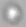
Similarity score
90%
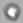
Similarity score
90%
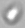
Similarity score
88%
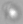
Similarity score
85%
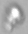
Similarity score
82%
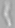
Similarity score
55%
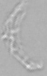
Similarity score
30%
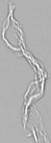
Similarity score
5%
Morphological Consistency Within Clusters
Within each resulting cluster, particles exhibited broadly consistent morphological characteristics. These similarities suggest that the clustering captured shared visual features present across the dataset, such as shape, texture, or structural complexity.
Fibrillar Particles
Cluster A
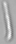
Fibrillar 1
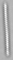
Fibrillar 2
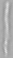
Fibrillar 3
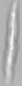
Fibrillar 4
Bright Blob Particles
Cluster B
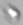
Bright Blob 1
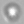
Bright Blob 2
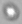
Bright Blob 3
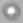
Bright Blob 4
Dark Blob Particles
Cluster C
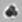
Dark Blob 1
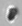
Dark Blob 2
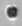
Dark Blob 3
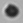
Dark Blob 4
High-Level View of Particle Diversity
Organization of thousands of images into a limited number of visually coherent groups provides a high-level overview of particle diversity across products. This structure serves as a foundation for further qualitative and quantitative analysis.